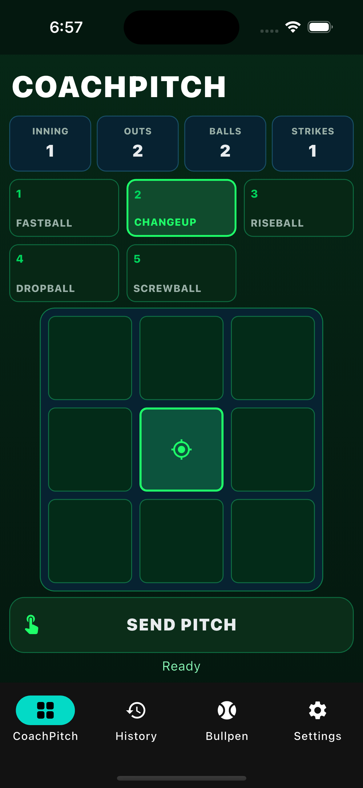
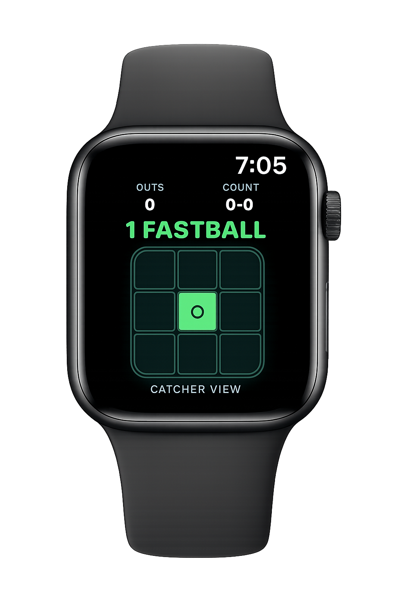
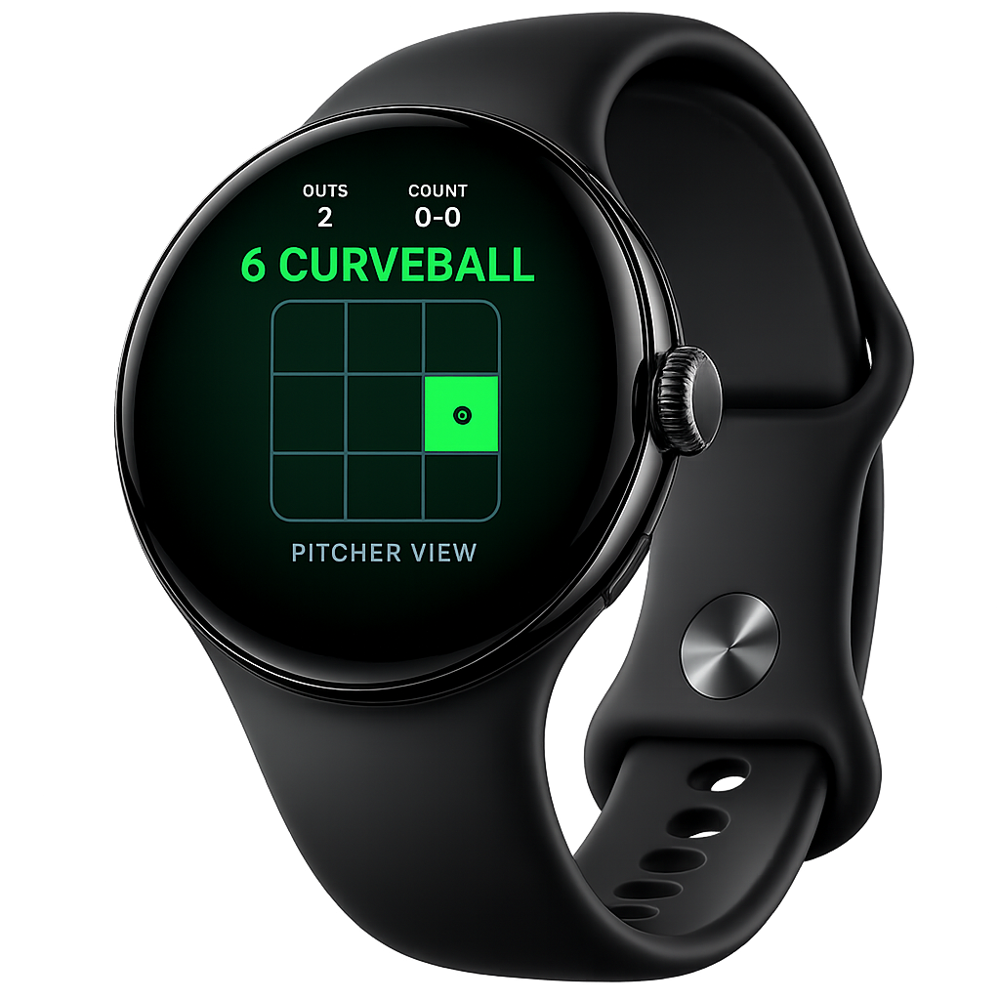
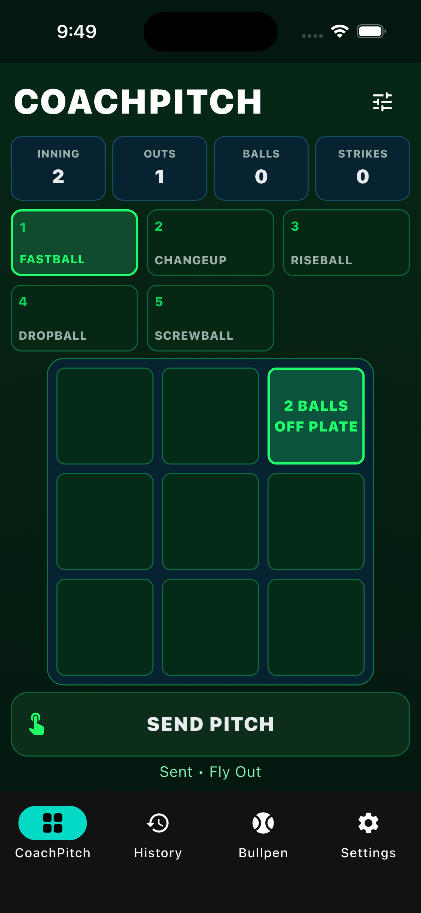
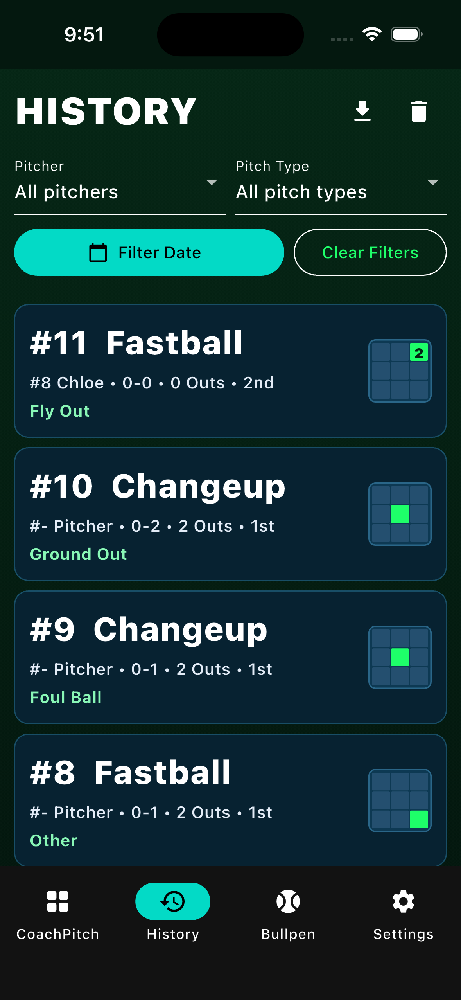
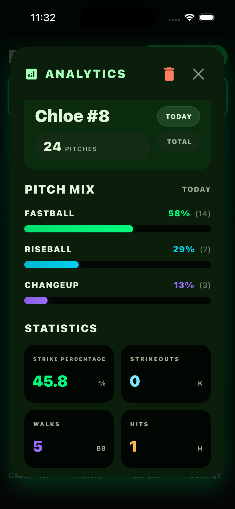
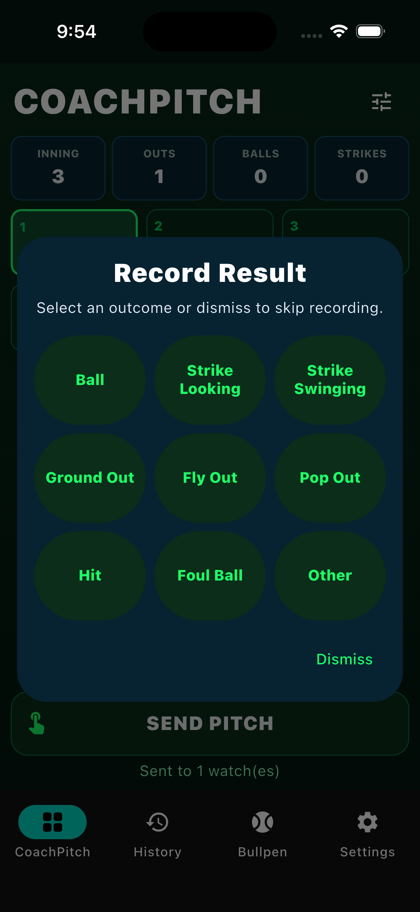
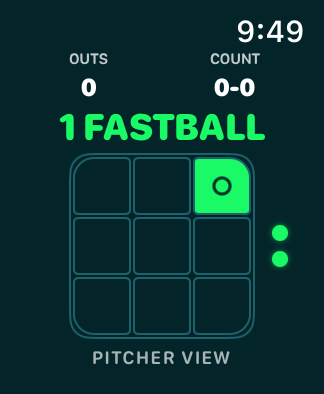
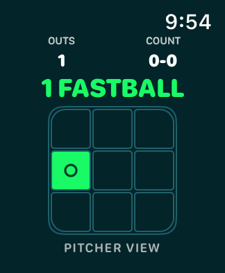
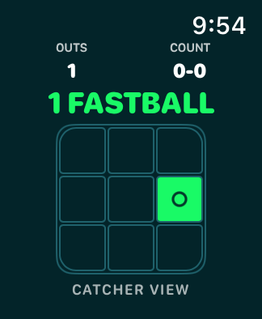

Instant pitch signals
Send pitch calls from the phone to a paired watch in seconds, so coaches and players can move faster without relying on traditional hand signals alone.
CoachPitch helps coaches call pitches reliably, faster, and more discreetly with paired smartwatch support.



CoachPitch keeps communication simple when the game speeds up. Pitch calling is streamlined, discreet, and built to feel natural from dugout to device.
Send pitch calls from the phone to a paired watch in seconds, so coaches and players can move faster without relying on traditional hand signals alone.
Built for both Apple (iPhone/Apple Watch) and Google (Android/WearOS) ecosystems, giving teams flexibility on device choice.
Call pitch type, choose location, and manage context from one modern interface that keeps the focus on execution.
Review prior calls and patterns from a clear historical view to support communication, planning, and in-game awareness.
Manage each pitcher individually and review statistics on pitches thrown.
Eliminate expensive proprietary solutions and devices that quickly become outdated and lack ongoing support.
The CoachPitch flow is designed to be intuitive for the coach and instantly readable for the player wearing the paired watch.
Activate your pitcher and configure pitches.
Select the pitch and location to send to your catcher.
Relay the communicated pitch to the pitcher.
Record the outcome and send the next pitch.







